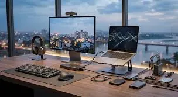
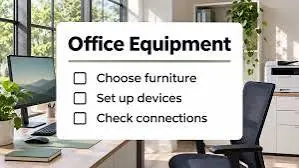

Office & business
The Complete IT Equipment Checklist for a New Office Setup
Plan a new office technology setup with a practical checklist for computers, networking, printers, security, accessories and ongoing support.
Introduction: Plan the Work Before Buying Equipment
Setting up your IT infrastructure can be a complicated process. You need to make sure you are investing in the right products and that your equipment can support the tasks your organisation needs to carry out. It should also keep your business data secure, and allow for easy management as your team grows. Choosing the wrong equipment will result in incompatible accessories, poor network coverage, unnecessary subscriptions, and having to replace equipment.
Start by thinking about what roles you are employing, what software they will be using, how many people you will have working within your office, and what type of data they will handle. Think about what equipment you will need to get straight away and what you will need going forwards. The list below are some common areas you will encounter. The list should be tailored to your business based on the size, industry and security requirements.

Computers & Laptops
Ensure you choose your computers based on the roles your employees will be carrying out. General office roles may require reliable laptops/desktops with enough memory, SSD storage, the correct processors and comfortable screens. If your employees have specific roles such as design, engineering, software development or data analysis then you might need higher performance computers with more powerful processors, extra memory and dedicated graphics.
Where possible try to keep your configuration standard. This will make it easier for deployment, support, spares and replacements. Ensure you know what warranty and support you have for your operating system, what service you can get and if your computers can be upgraded. Decide whether your employees will need laptops, desktops or a mixture.
Monitors, Keyboards & Mice
If your employees will benefit from extra screens, get them a monitor. Ensure it has the correct resolution, size, adjustable screens and compatibility with your chosen computers. If your employees are sitting at a desk you might want to get external keyboards and mice to make things more comfortable.
If appropriate, get monitor arms or stands. Ensure your desks can support them. Where possible try to keep the connections standard so your employees can easily plug into their equipment. Have a small amount of approved cables and peripherals to hand for replacements.
Printers, Scanners & Multifunction
Decide whether you need individual printers, network printers or multifunction. Think about how many pages you expect to print per month, do you need colour printing, what size paper you will need and how many people will be sharing the printers. A small team might just need one reliable multifunction printer, whereas a larger office might need separate printers for different departments.
Look at the total cost of ownership. This should include ink/toner, paper, maintenance parts, service and expected downtime. Ensure your printer can print double sided, has scanning capabilities, network capabilities and security. Shared printers should be placed where your employees can easily collect documents without showing any confidential outputs.
Network Router, Switches & Wi-Fi
Having a reliable network is essential. Having a business router/firewall and Wi-Fi access points that are suitable for your organisation size, expected devices and internet service. Larger areas might need several access points or managed network equipment.
Where possible ensure devices that will benefit from a stable connection have an Ethernet cable. This could be desktops, network storage or a shared printer. Ensure you have enough switches to cover your required ports. Ensure your cables are labelled. If you have guests you will need separate Wi-Fi. If your office is complex or has more than one floor, have a qualified network professional look into coverage and security.
Internet & Backup Connection
Ensure you select an internet package suitable for your number of employees and what they will be using. If there are lots of video calls, cloud backups and large file transfers make sure you have a good upload speed. Look at service level agreements, time frames for installation, support and data limits.
If your business cannot afford to lose internet, consider having a backup connection. This could be a second provider or mobile broadband. Ensure you can easily switch to your backup connection. Ensure you have the details for your provider and who to escalate to, in a secure place.
Security & Access
Before your employees start using business systems, plan your security. Use an approved operating system, endpoint protection, automatic updates, strong authentication and multi factor authentication on important accounts. Ensure you have individual accounts for your employees. Give them the minimum access they need to carry out their tasks.
Ensure your router and Wi-Fi are secure. Change default passwords and limit access to admin. Ensure you have a process in place to add/remove employees. This should include turning off their accounts and getting back your company devices. If you have regulated or sensitive information, seek advice on what you need to comply with.
Backups & Storage
Decide where you are storing your business files. This might include approved cloud storage, network attached storage or both. Decide what data needs to be backed up regularly, who can access it and how long it needs to be kept.
Ensure you have a backup strategy in place. This should include ensuring your data is safe from being accidentally deleted, hardware failure and ransomware. Ensure you test your backups regularly. Don’t assume just because you have synchronisation this is a full backup. There might be unwanted changes that get synchronised. Ensure you have a process in place for recovering your data, and who is responsible for checking your backups.
Power & Cables
Ensure you have the right sockets for your computers, monitors, network and printers. Use reputable surge protectors where appropriate. Choose products that are rated for what you will be connecting. Don’t overload your sockets.
If you have critical equipment consider using an UPS. This should be sized to your expected load and time. This gives you time to safely shut down your equipment. This should be maintained and tested. Ensure your power and network cables are organised and labelled. Don’t have them running across walkways.
Collaboration & Communication
Your employees might need collaboration tools. This could include email, calendars, messaging, video calls, document collaboration and project management. Ensure you have tools that are suitable for your business. Check the licencing, how many users can use them, storage, administration and exporting data.
Ensure you have a standard process for setting up accounts. Provide some basic guidance for your users. Don’t buy duplicate subscriptions until you know what is included in your current subscriptions. Know who is responsible for renewals, payments and permissions.
Software, Licencing & Device Management
Ensure you know what operating systems and applications each role will need. Ensure you have proper licencing, they are assigned to the correct people and supported. If you have a larger organisation and higher risk, consider using central device management. This can make it easier to configure, update and apply security.
Keep a device register. This should include what type of device, model, serial number, who it is assigned to, purchase date, warranty and software. Keep your recovery keys and admin in approved secure systems.
Office Equipment & Meeting Rooms
Depending on your office you might want devices such as laptop docks, webcams, headsets, speakers, presentation screens, adaptors, charging stations and document shredders. Meeting rooms might need a screen, video call camera, microphone and reliable Wi-Fi/Ethernet.
Ensure you test your equipment in the room. Ensure your cables can reach, audio is clear and your video calling is compatible with your hardware. Provide simple guidance so your employees can get started without any help.

Support, Maintenance & Replacements
Decide who your employees should contact if they have an issue. Small offices might have an external IT support team, whereas larger organisations might have internal IT. Ensure you have a process to report, prioritise and track issues. Keep your vendor contacts, warranty details and device details in a place where authorised people can access them.
Ensure you have a schedule to check your software updates, backups, printer supplies, network equipment and check the condition of your hardware. Plan your budget for replacements. Ensure old computers, drives and printers are disposed of securely.
Conclusion – Secure & Scalable Office
Having a full IT setup for your office includes the right computers, monitors, printers, network, security, backups, power and support. By starting with your employee processes and business needs, keeping your equipment standard where possible and adding maintenance into your budget you will have an office that can run reliably from day one. Keeping a register, clear access processes and testing your backups will make your office easier to scale in the future..
Need a hand with your printer or laptop?
Printerworld sells printers, laptops and genuine supplies, and repairs and services both. Bring in your model number and we will help you get it right.